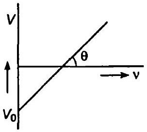

6.0 × 1014 Hz आवृत्ति का एकवर्णी प्रकाश किसी लेसर के द्वारा उत्पन्न किया जाता है। उत्सर्जन क्षमता 2.0 × 10-3 W है। (a) प्रकाश किरण-पुंज में किसी फ़ोटॉन की ऊर्जा कितनी है? (b) स्रोत के द्वारा औसत तौर पर प्रति सेकंड कितने फ़ोटॉन उत्सर्जित होते हैं?
प्रकाश किरण-पुंज में किसी फ़ोटॉन की ऊर्जा कितनी है?
स्रोत के द्वारा औसत तौर पर प्रति सेकंड कितने फ़ोटॉन उत्सर्जित होते हैं?
यदि सीज़ियम का कार्य-फलन 2.14 eV है तो परिकलन कीजिए : (a) सीज़ियम की देहली आवृत्ति तथा (b) आपतित प्रकाश का तरंगदैर्घ्य, यदि प्रकाशिक धारा को 0.60 V का एक निरोधी विभव लगाकर शून्य किया जाए।
सीज़ियम की देहली आवृत्ति परिकलन कीजिए।
आपतित प्रकाश का तरंगदैर्घ्य ज्ञात कीजिए, यदि प्रकाशिक धारा को 0.60 V का एक निरोधी विभव लगाकर शून्य किया जाए।
(a) एक इलेक्ट्रॉन जो 5.4 × 106 m / s की चाल से गति कर रहा है, (b) 150 g द्रव्यमान की एक गेंद जो 30.0 m / s की चाल से गति कर रही है, से जुड़ी दे ब्रॉग्ली तरंगदैर्घ्य क्या होगी?
एक इलेक्ट्रॉन जो 5.4 × 106 m / s की चाल से गति कर रहा है, से जुड़ी दे ब्रॉग्ली तरंगदैर्घ्य क्या होगी?
150 g द्रव्यमान की एक गेंद जो 30.0 m / s की चाल से गति कर रही है, से जुड़ी दे ब्रॉग्ली तरंगदैर्घ्य क्या होगी?
30 kV इलेक्ट्रॉनों के द्वारा उत्पन्न X-किरणों की (a) उच्चतम आवृत्ति तथा (b) निम्नतम तरंगदैर्घ्य प्राप्त कीजिए।
उच्चतम आवृत्ति प्राप्त कीजिए।
निम्नतम तरंगदैर्घ्य प्राप्त कीजिए।
सीज़ियम धातु का कार्य-फलन 2.14 eV है। जब 6 × 1014 Hz आवृत्ति का प्रकाश धातु-पृष्ठ पर आपतित होता है, इलेक्ट्रॉनों का प्रकाशिक उत्सर्जन होता है। (a) उत्सर्जित इलेक्ट्रॉनों की उच्चतम गतिज ऊर्जा, (b) निरोधी विभव, और (c) उत्सर्जित प्रकाशिक इलेक्ट्रॉनों की उच्चतम चाल कितनी है?
उत्सर्जित इलेक्ट्रॉनों की उच्चतम गतिज ऊर्जा कितनी है?
निरोधी विभव कितना है?
उत्सर्जित प्रकाशिक इलेक्ट्रॉनों की उच्चतम चाल कितनी है?
एक विशिष्ट प्रयोग में प्रकाश-विद्युत प्रभाव की अंतक वोल्टता 1.5 V है। उत्सर्जित प्रकाशिक इलेक्ट्रॉनों की उच्चतम गतिज ऊर्जा कितनी है?
632.8 nm तरंगदैर्घ्य का एकवर्णी प्रकाश एक हीलियम-नियॉन लेसर के द्वारा उत्पन्न किया जाता है। उत्सर्जित शक्ति 9.42 mW है। (a) प्रकाश के किरण-पुंज में प्रत्येक फ़ोटॉन की ऊर्जा तथा संवेग प्राप्त कीजिए, (b) इस किरण-पुंज के द्वारा विकिरित किसी लक्ष्य पर औसतन कितने फ़ोटॉन प्रति सेकंड पहुँचेंगे? (यह मान लीजिए कि किरण-पुंज की अनुप्रस्थ काट एकसमान है जो लक्ष्य के क्षेत्रफल से कम है), तथा (c) एक हाइड्रोजन परमाणु को फ़ोटॉन के बराबर संवेग प्राप्त करने के लिए कितनी तेज़ चाल से चलना होगा?
प्रकाश के किरण-पुंज में प्रत्येक फ़ोटॉन की ऊर्जा तथा संवेग प्राप्त कीजिए।
इस किरण-पुंज के द्वारा विकिरित किसी लक्ष्य पर औसतन कितने फ़ोटॉन प्रति सेकंड पहुँचेंगे? (यह मान लीजिए कि किरण-पुंज की अनुप्रस्थ काट एकसमान है जो लक्ष्य के क्षेत्रफल से कम है)
एक हाइड्रोजन परमाणु को फ़ोटॉन के बराबर संवेग प्राप्त करने के लिए कितनी तेज़ चाल से चलना होगा?
प्रकाश-विद्युत प्रभाव के एक प्रयोग में, प्रकाश आवृत्ति के विरुद्ध अंतक वोल्टता की ढलान 4.12 × 10-15 V s प्राप्त होती है। प्लांक स्थिरांक का मान परिकलित कीजिए।

किसी धातु की देहली आवृत्ति 3.3 × 1014 Hz है। यदि 8.2 × 1014 Hz आवृत्ति का प्रकाश धातु पर आपतित हो, तो प्रकाश-विद्युत उत्सर्जन के लिए अंतक वोल्टता ज्ञात कीजिए।
किसी धातु के लिए कार्य-फलन 4.2 eV है। क्या यह धातु 330 nm तरंगदैर्घ्य के आपतित विकिरण के लिए प्रकाश-विद्युत उत्सर्जन देगा?
7.21 × 1014 Hz आवृत्ति का प्रकाश एक धातु-पृष्ठ पर आपतित है। इस पृष्ठ से 6.0 × 105 m / s की उच्चतम गति से इलेक्ट्रॉन उत्सर्जित हो रहे हैं। इलेक्ट्रॉनों के प्रकाश उत्सर्जन के लिए देहली आवृत्ति क्या है?
488 nm तरंगदैर्घ्य का प्रकाश एक ऑर्गन लेसर से उत्पन्न किया जाता है, जिसे प्रकाश-विद्युत प्रभाव के उपयोग में लाया जाता है। जब इस स्पेक्ट्रमी-रेखा के प्रकाश को उत्सर्जक पर आपतित किया जाता है तब प्रकाशिक इलेक्ट्रॉनों का निरोधी ( अंतक ) विभव 0.38 V है। उत्सर्जक के पदार्थ का कार्य-फलन ज्ञात करें।
(a) एक 0.040 kg द्रव्यमान का बुलेट जो 1.0 km / s की चाल से चल रहा है, (b) एक 0.060 kg द्रव्यमान की गेंद जो 1.0 km/s की चाल से चल रही है, और (c) एक धूल-कण जिसका द्रव्यमान 1.0 × 10-9 kg और जो 2.2 m / s की चाल से अनुगमित हो रहा है, का दे ब्रॉग्ली तरंगदैर्घ्य कितना होगा?
एक 0.040 kg द्रव्यमान का बुलेट जो 1.0 km / s की चाल से चल रहा है, का दे ब्रॉग्ली तरंगदैर्घ्य कितना होगा?
एक 0.060 kg द्रव्यमान की गेंद जो 1.0 km/s की चाल से चल रही है, का दे ब्रॉग्ली तरंगदैर्घ्य कितना होगा?
एक धूल-कण जिसका द्रव्यमान 1.0 × 10-9 kg और जो 2.2 m / s की चाल से अनुगमित हो रहा है, का दे ब्रॉग्ली तरंगदैर्घ्य कितना होगा?
यह दर्शाइए कि वैद्युतचुंबकीय विकिरण का तरंगदैर्घ्य इसके क्वांटम (फ़ोटॉन) के तरंगदैर्घ्य के बराबर है।